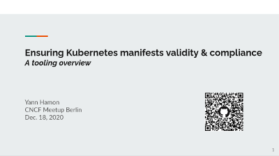

Yann Hamon
Staff Engineer @Contentful
Ensuring Kubernetes manifests validity & compliance - a tooling overview
In an Infrastructure as code / GitOps world, testing that your Kubernetes configuration is correct, secure, and compliant to your company's requirements & best practices is more important than ever. An increasingly large list of tools is there to help you - linters, validators, testing frameworks, admission controllers... each working in subtly different ways.
To help you navigate these waters, I will present some of the most common tools for Kubernetes manifests validation & compliance testing, detail their use, limitations and provide some usage examples.
I will also introduce Kubeconform, a new Kubernetes validation tool I authored.
Open-sourcing kube-secret-syncer: A Kubernetes operator to sync secrets from AWS Secrets Manager

We’re releasing the open source code for Kube-secret-syncer, a Kubernetes operator that syncs secrets from AWS Secrets Manager. This operator improves on existing projects by delivering sophisticated access control, templated fields and caching to reduce costs. For those familiar with the struggles that come from synching secrets between the two, we hope this comes as a welcome solution. [...]
Creating greater reliability: CoreDNS-nodecache

Ongoing issues in the Linux kernel’s UDP connection tracking have caused challenges with DNS, and bugs particularly affect DNS in Kubernetes in its default configuration; we saw elevated rates of DNS failures that seemed to increase with load on our clusters. Other developers have reported these problems in blog posts, such as Racy conntrack and DNS lookup timeouts and a reason for unexplained connection timeouts on Kubernetes/Docker. In these cases, a race condition in the kernel [...]
Making s3 more resilient using lambda@edge
[...]